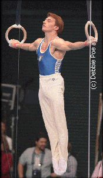

Yuri Chechi (ITA)
1996 Olympic R Champion
2004 Olympic R Bronze Medalist
5-Time World R Champion
3-Time European R Champion
|

Medal Total
- Olympic Games: 1 Gold,
1 Bronze
- World Championships: 5
Gold, 2 Bronze
- World Cup: 1 Bronze
- European Championships: 3
Gold, 1 Bronze
|
Yuri was born on October 11,
1969 in Prato. He was named after Soviet cosmonaut Yuri Gagarin.
Chechi was coached by Bruno Franceschetti.
Competition Results
1984
Alexandria
International: 5th AA
1986 - DTB Cup: 10th AA
- Jr. European Championships: 7th AA, 7th V, 8th PH
- Jr. ITA-FRA-ESP Tri-Meet: 2nd AA
-
- 1987
- European Championships: 16th AA
- Italian Championships: 2nd AA
- ITA-GDR Dual Meet: 3rd AA
- Mediterranean Games: 2nd AA, 1st PB, 2nd R, 3rd HB, 4th FX
- World Championships: 10th Team, 20th AA, 6th R
-
- 1988
- Arena Cup: 9th AA
- European Cup: 4th AA, 1st R, 3rd PB, 4th V, 5th HB
- Italian Championships: 2nd AA
- Olympic Games: 8th Team, 17th AA, 6th R
-
- 1989
- American Cup: 6th AA
- Chunichi Cup: 2nd AA
- DTB Cup: 6th AA, 1st R, 2nd FX, 2nd PB
- European Championships: 7th AA, 4th R, 8th FX
- International Mixed Pairs: 14th Team
- Rome Grand Prix: 1st AA
- World Championships (Stuttgart): 7th Team, 10th AA, 3rd
R, 5th FX
-
- 1990
- Cottbus International: 4th AA, 1st PB
- DTB Cup: 2nd AA, 3rd R, 3rd HB, 5th PB, 6th PH
- European Championships: 3rd AA, 1st R, 5th
FX, 5th PH, 6th HB, 7th PB, 8th V
- Gander Memorial: 1st AA
- GER-ITA-ROM Tri Meet: 1st AA
- World Cup: 5th AA, 3rd FX, 4th HB, 5th R,
8th PH
-
- 1991
- European Cup: 1st AA, 1st R, 1st HB
- International Hungarian Championships: 1st AA, 1st FX, 1st
PB
- Italian Championships: 1st AA, 1st FX, 1st PH, 1st R, 1st
HB
- Mediterranean Games: 1st AA, 1st FX, 1st PH, 1st R, 1st PB
- Moscow World Stars: 6th AA
- Rome Grand Prix: 2nd AA
- World Championships: 7th Team, 5th AA, 3rd
R, 4th FX, 6th PH
-
- 1992
- CIS-ROM-ITA: 3rd AA
European Championships: 7th AA, 1st R, 3rd
PH, 8th PB
ITA Championships: 1st AA, 1st FX, 1st R, 1st PB, 2nd PH, 4th V, 6th
HB
- Milan Grand Prix: 1st AA
-
- 1993
- Birmingham Classic: 2nd AA, 1st R, 2nd
PH, 2nd HB
Chunichi Cup: 7th AA, 1st R, 5th PB, 7th PH
- DTB Cup: 1st R, 1st PB, 2nd PH, 4th FX
ITA Championships: 1st AA, 1st R
ITA-RUS-ROM: 21st AA
- Soapberry World Challenge: 1st AA
- Tokyo Cup: 1st R, 4th PH, 4th PB, 4th HB
- University Games: 2nd AA, 1st R
- World Championships: 10th AA, 1st R
-
- 1994
- European Championships: 6th AA, 1st R
Rome Grand Prix: 1st AA
Torino Grand Prix: 1st PH, 1st R, 2nd PB, 2nd HB, 3rd FX
- World Championships (Brisbane): 8th AA, 1st R
-
- 1995
- DTB Cup: 2nd R
- French International: 7th AA, 1st R
- Gander Memorial: 3rd AA
- Italian Nationals: 1st AA, 1st R, 1st PB,
- ITA-RUS Dual Meet: 1st AA
- Ostrava International: 5th AA
- World Championships: 7th AA, 1st R
-
- 1996
- European Championships: 5th AA, 1st R, 7th
PB
- French International: 1st R, 4th PB
- Olympic Games: 17th AA, 1st R
- Swiss Cup: 1st R
- World Championships: 1st R
-
- 1997
- Mediterranean Games: 1st Team, 1st R
- Moscow World Stars: 1st R
- University Games: 1st R, 6th Team
- World Championships: 1st R,
11th Team
2004
European Championships: 8th R
Olympic Games: 12th Team, 3rd R
-
This page was created on April 19, 1997 and was last
updated on August 26, 2007
.
© Gymn Forum